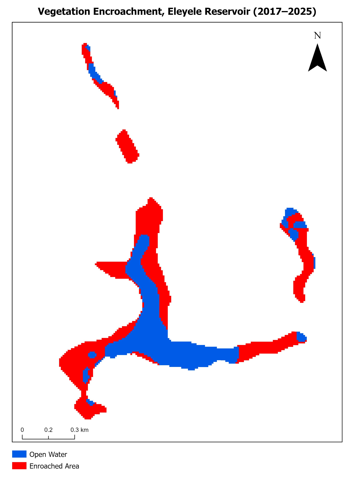
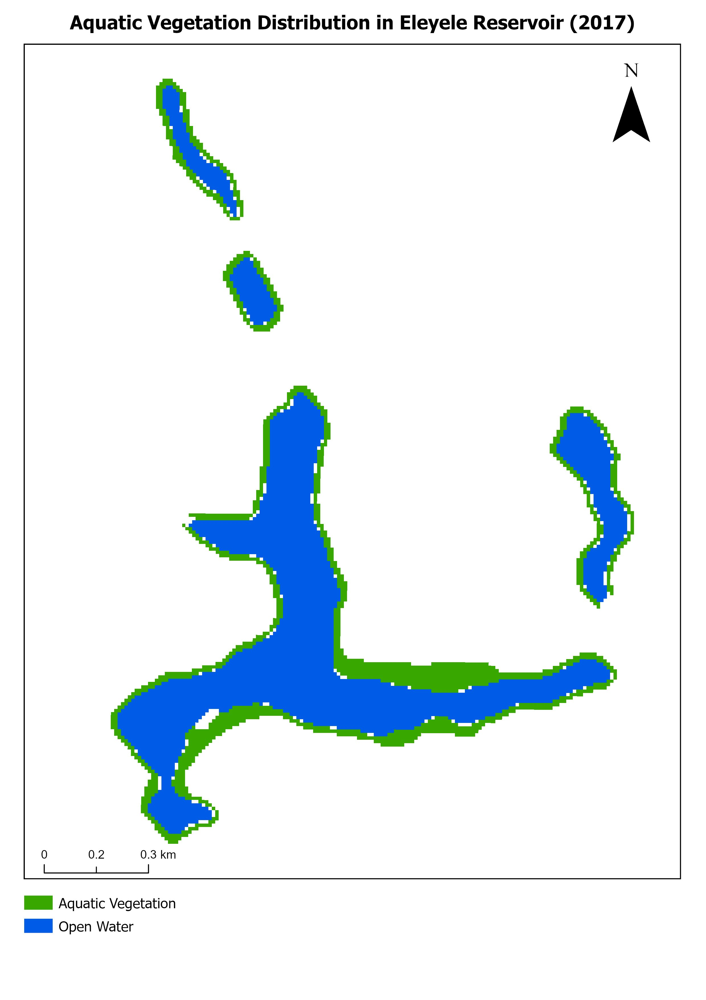
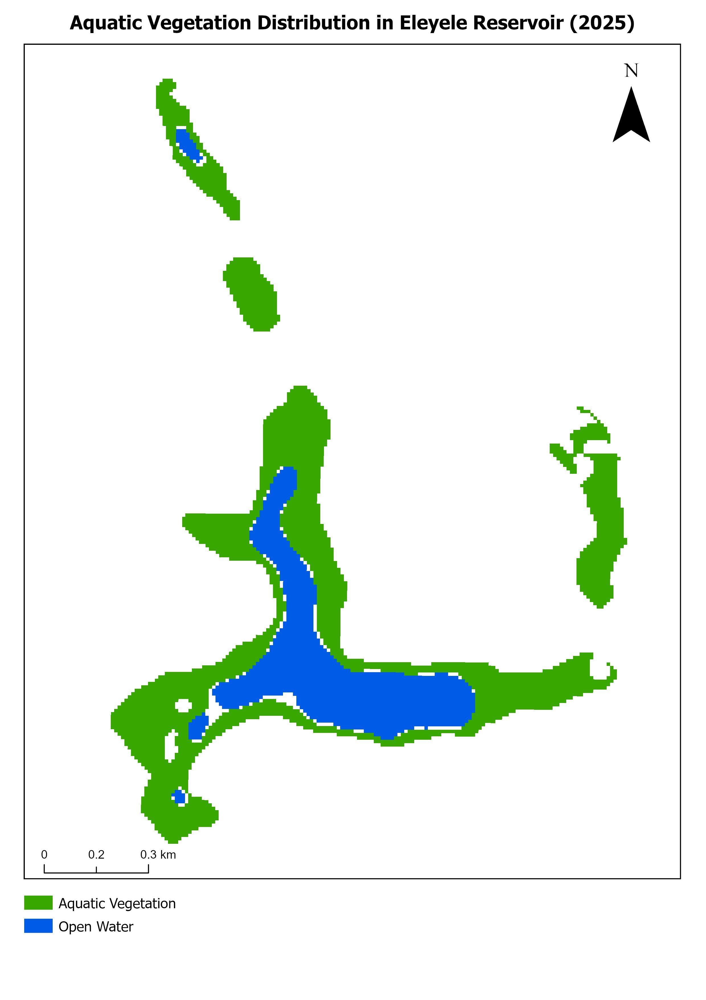
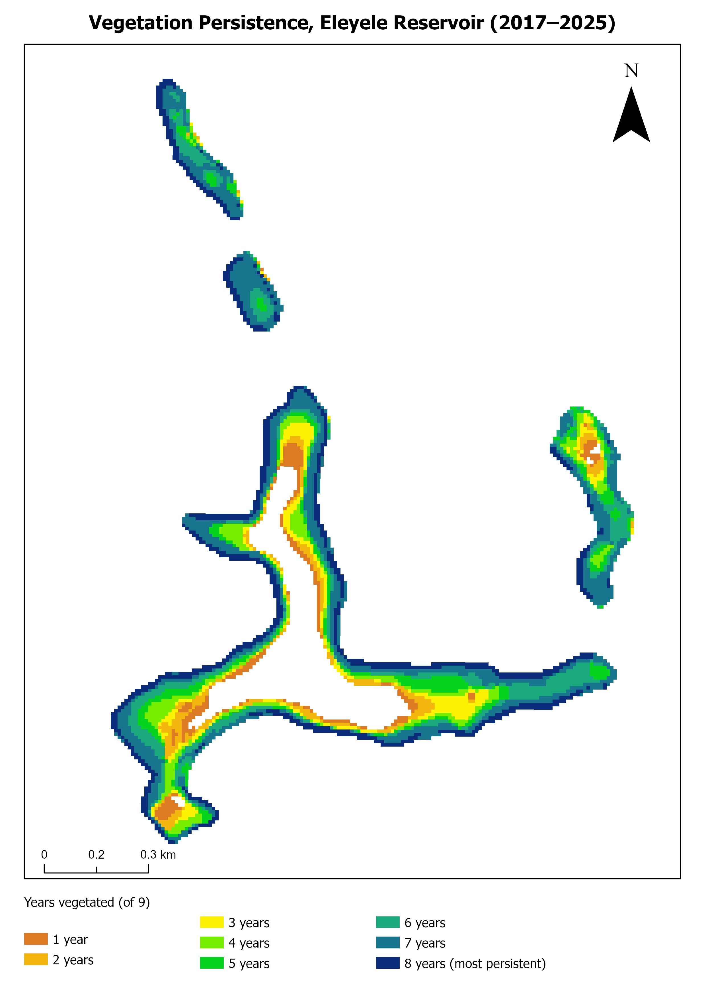
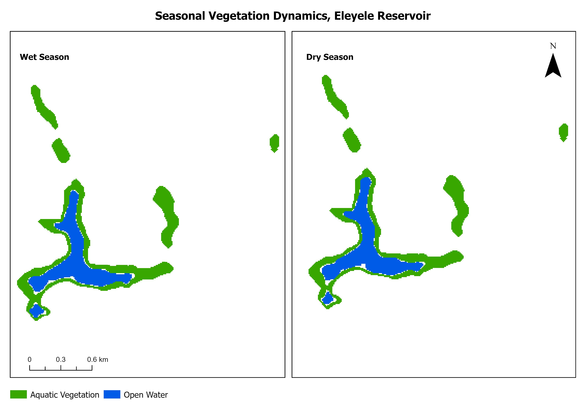

A nine-year remote sensing study tracking how aquatic vegetation has spread across Eleyele Reservoir, Ibadan, and how much open water it has displaced in the process.
Eleyele Reservoir has been visibly losing open water to aquatic vegetation for years, but nobody had quantified how fast or where it was happening worst. This assignment set out to do that: build a multi-year, multi-season record of the reservoir's water surface using existing vector boundaries, raster masks, and persistence layers from 2017 through 2025, then turn that record into maps and figures that actually show the trend.
The core question was simple — is the reservoir shrinking, and if so, by how much, where, and does it move with the seasons? The answer, confirmed across every output below, is yes: open water has declined sharply, and vegetation has taken its place.
The analysis ran entirely on pre-processed annual and monthly datasets — no field visits were involved. The workflow moved through five phases in ArcMap:
Derived from the monthly area time series. The sharpest drop happened between 2018 and 2020; a partial rebound followed in 2021–2022 before the decline resumed.





Two things stand out from putting these five outputs together. First, the decline in open water is not a seasonal artifact — the persistence map shows large areas vegetated for 7, 8, or all 9 years monitored, which only a long-term process like sediment buildup, nutrient loading, or reduced flow could produce. Second, the seasonal comparison shows the wet/dry difference is real but minor compared to the year-on-year trend, meaning whatever is driving the encroachment isn't simply rainfall.
From a methods standpoint, this project was a good exercise in working entirely from time-series raster and vector data without any new image classification — the emphasis was on change detection, reclassification, and getting the cartographic outputs to actually communicate a trend rather than just show one year of data in isolation.
Supporting tables behind the figures above: